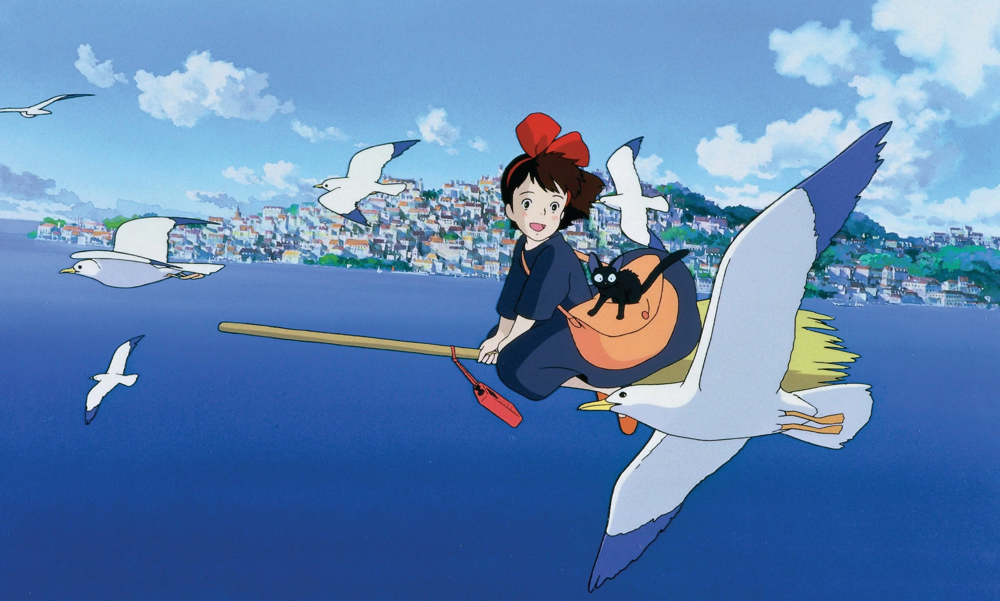
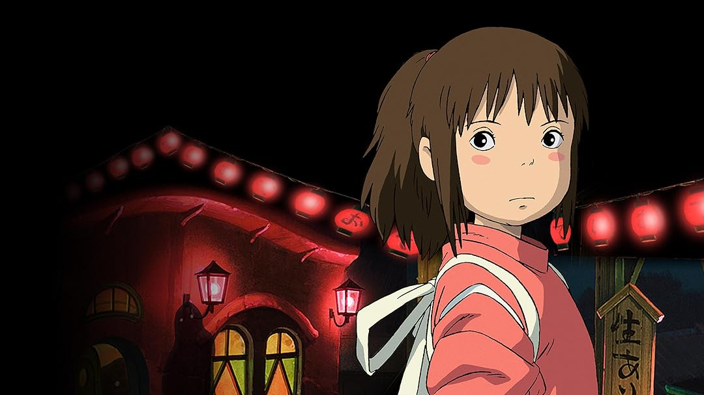
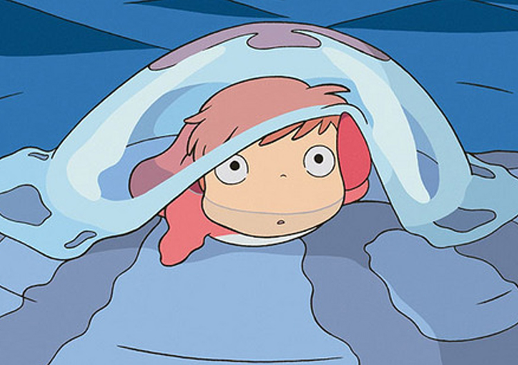
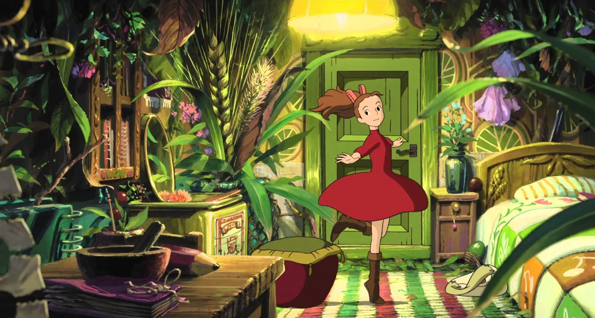
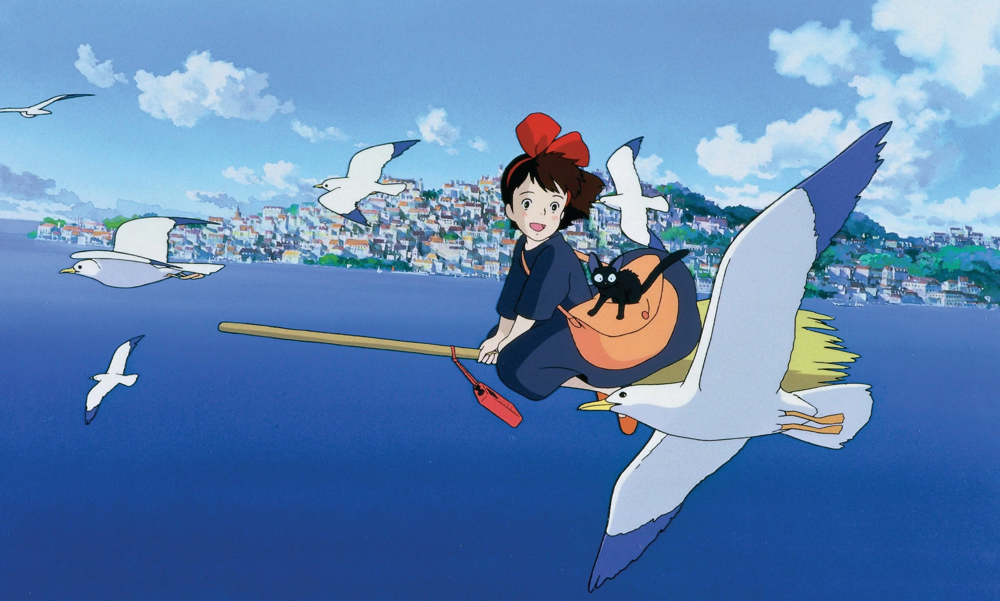
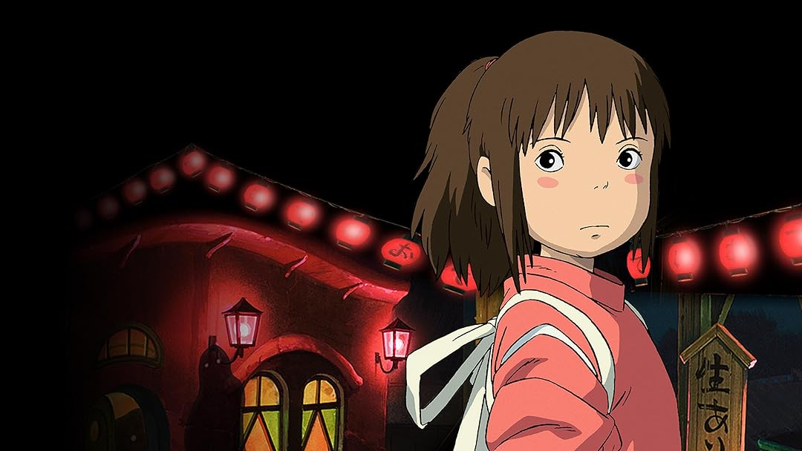
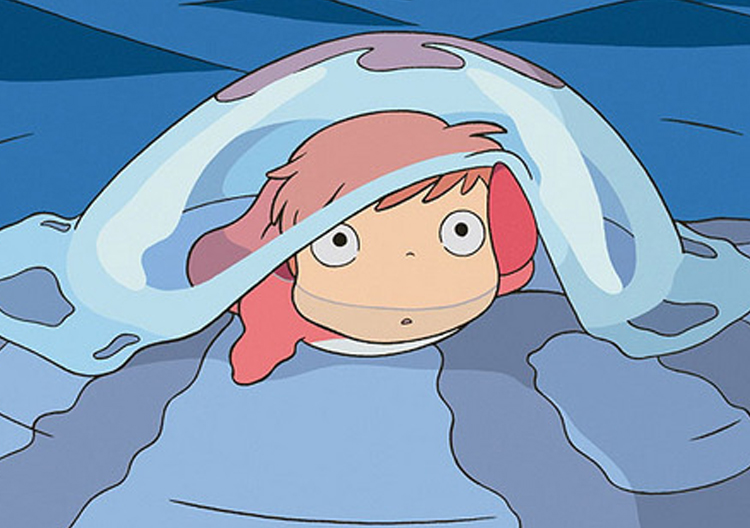
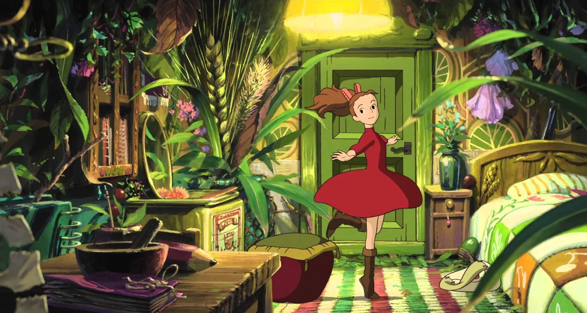
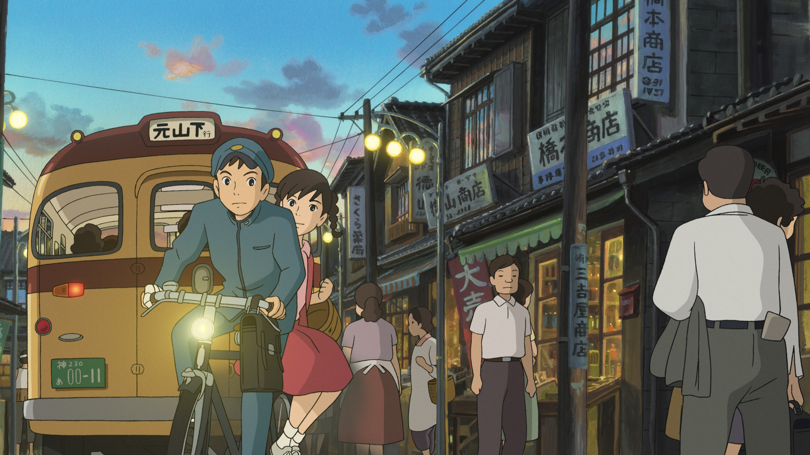
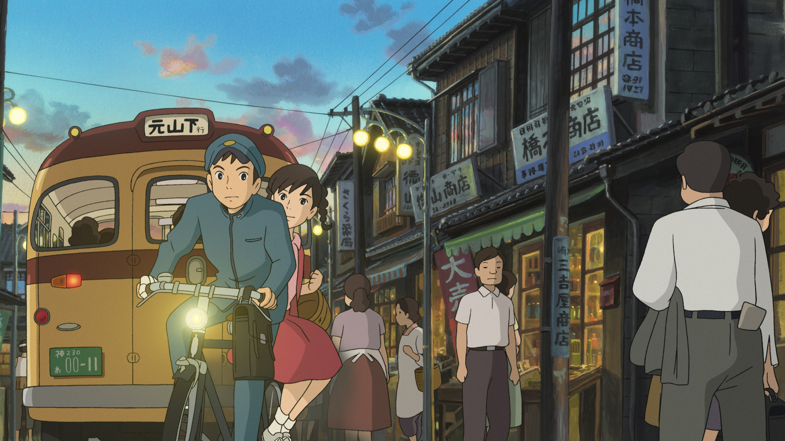

 


My Neighbor Totoro is a 1988 Japanese animated fantasy film written and directed by Hayao Miyazaki and animated by Studio Ghibli for Tokuma Shoten. It focuses on two young sisters and their interactions with friendly wood spirits in postwar rural Japan.
Kiki's Delivery Service is a 1989 Japanese animated fantasy film written, produced, and directed by Hayao Miyazaki, based on the 1985 novel of the same name by Eiko Kadono. It was animated by Studio Ghibli for Tokuma Shoten, Yamato Transport and the Nippon Television Network. The story follows Kiki, a young witch who moves to the port city of Koriko with her cat Jiji and starts a flying courier service.
Spirited Away is a 2001 Japanese animated fantasy film written and directed by Hayao Miyazaki. Spirited Away tells the story of Chihiro "Sen" Ogino, a ten-year-old girl who, while moving to a new neighborhood, inadvertently enters the world of kami (spirits of Japanese Shinto folklore).

Ponyo is a 2008 Japanese animated fantasy film written and directed by Hayao Miyazaki. The film tells the story of Ponyo, a goldfish who escapes from the ocean and is helped by a five-year-old human boy, Sōsuke, after she is washed ashore while trapped in a glass jar.
The Secret World of Arrietty is a 2010 Japanese animated fantasy film directed by Hiromasa Yonebayashi as his feature film debut as a director, animated by Studio Ghibli. The screenplay is about a family of tiny people who live secretly in the walls and floors of a typical household, borrowing items from humans to survive.
Howl's Moving Castle is a 2004 Japanese animated fantasy film written and directed by Hayao Miyazaki. The film is set in a fictional kingdom where both magic and early twentieth-century technology are prevalent, against the backdrop of a war with another kingdom.
From Up on Poppy Hill is a 2011 Japanese animated drama film directed by Gorō Miyazaki, written by Hayao Miyazaki and Keiko Niwa, animated by Studio Ghibli. Set in 1963 Yokohama, Japan, the film tells the story of Umi Matsuzaki (Nagasawa), a high school girl living in a boarding house, 'Coquelicot Manor'.